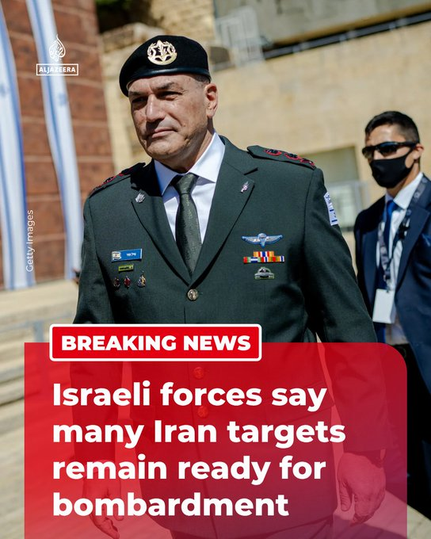

@AJENews
📝 原文: BREAKING: Israeli forces say they still have additional targets in Iran prepared for potential strikes.More onhttp://Aljazeera.com
🇨🇳 译文: 突发新闻：以色列军队表示，他们在伊朗仍有其他目标，为潜在的袭击做好准备。更多信息请访问 http://Aljazeera.com


🕒 2026-05-06T13:58:46+00:00